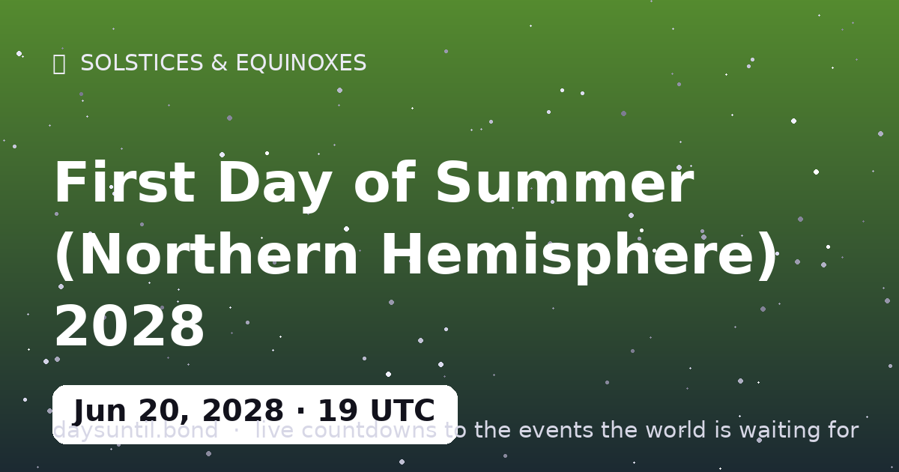

How Many Days Until First Day of Summer (Northern Hemisphere) 2028?
–days
–hours
–minutes
–seconds
First Day of Summer (Northern Hemisphere) 2028 falls on Tuesday, June 20, 2028.
📅 – weeks
💼 – weekdays
🛌 – weekend days
🗓️ – months (approx)

Quick facts
| Exact moment (UTC) | June 20, 2028 · 19:54 |
|---|---|
| Event | June Solstice |
| Hemisphere note | Seasons flip in the Southern Hemisphere |
About First Day of Summer (Northern Hemisphere) 2028
The june solstice of 2028 falls on June 20, 2028 at 19:54 UTC — the astronomical start of summer in the Northern Hemisphere (winter below the equator).
Astronomically, this is the Sun at its northernmost point — summer begins in the north, winter in the south. It is also the day the tide of daylight turns: after the June solstice the change is barely minutes per week, then accelerates — the reason the weeks after a solstice feel darker (or lighter) faster than the solstice day itself.